摄影创作离不开构图，这就像写文章离不开章法一样重要，不是可有可无的，实属作品成败的关键。摄影构图与绘画构图有其相同之处，有些是可以相互借鉴的，这个上文也介绍到了，但又不能完全代替，每一种艺术形式都有它独特的规律和原理，这是不能违背的。对于摄影艺术，只有在审美思想上提高了，技术方法娴熟了，才能创作出有灵魂的作品！
九宫格构图
将被摄主体或重要景物放在“九宫格”交叉点的位置上。“井”字的四个交叉点就是主体的最佳位置。一般认为，右上方的交叉点最为理想，其次为右下方的交叉点。但也不是一成不变的。这种构图格式较为符合人们的视觉习惯，使主体自然成为视觉中心，具有突出主体，并使画面趋向均衡的特点。（其实这个我觉得你用的最多了，平时给男（女）朋友拍照用到的就是这种咯，排除近距离的自拍啊！）
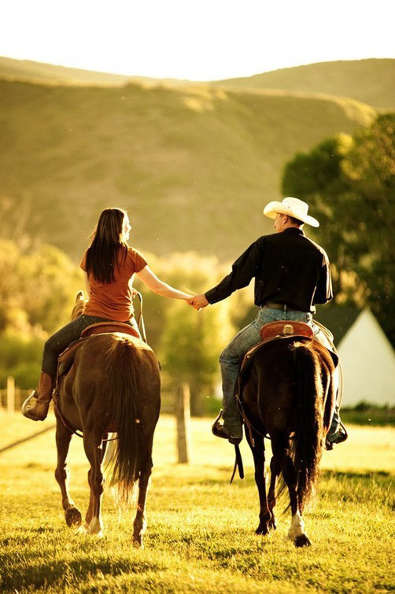
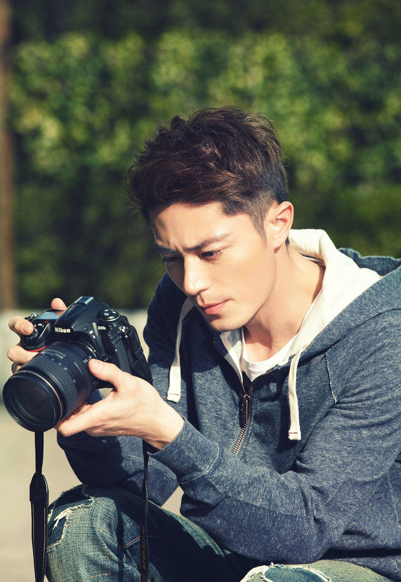
垂直式构图
能充分显示景物的高大和深度。常用于表现万木争荣的森林参天大树、险峻的山石、飞泻的瀑布、摩天大楼，以及竖直线形组成的其他画面。（例如：陪MM去逛街，看到很高的有科技感的高楼大厦你用的就是这种构图）
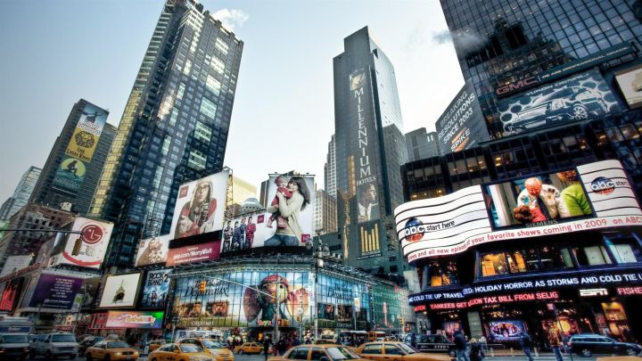

X形构图
线条、影调按X形布局，透视感强，有利于把人们视线由四周引向中心，或景物具有从中心向四周逐渐放大的特点。常用于建筑、大桥、公路、田野等题材。（这个就适合街拍了，这种具有延伸式的感觉，这种透视也是小沫最喜欢的一种，拍摄出来的作品很有层次感、空间感）
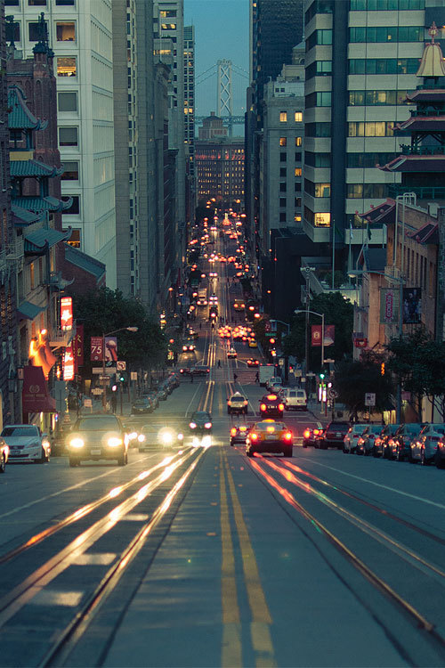
对角线构图
把主体安排在对角线上，能有效利用画面对角线的长度，同时也能使陪体与主体发生直接关系。富于动感，显得活泼，容易产生线条的汇聚趋势，吸引人的视线，达到突出主体的效果。
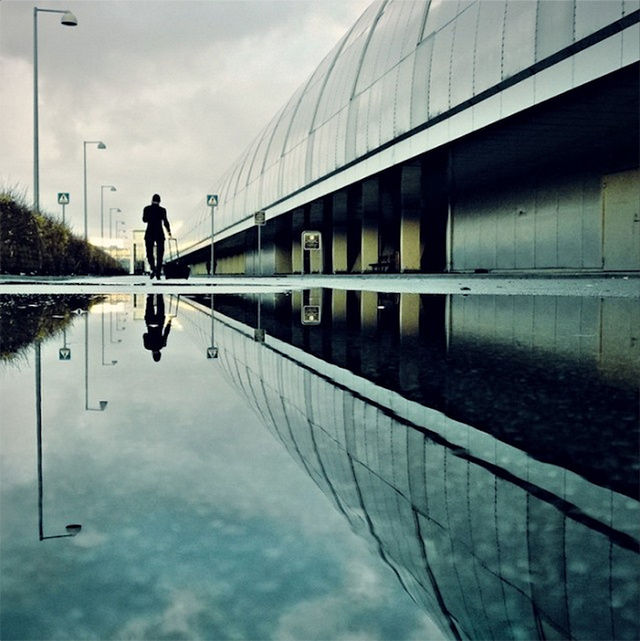
S型构图。画面上的景物呈S形曲线的构图形式，具有延长、变化的特点，使人看上去有韵律感，产生优美、雅致、协调的感觉。当需要采用曲线形式表现被摄体时，应首先想到使用S形构图。常用于河流、溪水、曲径、小路等。
三角形构图
以三个视觉中心为景物的主要位置，有时是以三点成一面的几何形成安排景物的位置，形成一个稳定的三角形。这种三角形可以是正三角、也可以是斜三角或倒三角。其中斜三角形较为常用，也较为灵活。三角形构图具有安定、均衡、灵活等特点。（比如：你平时和朋友一起出去吃美食了，想晒下朋友圈，就可以采用这种形式哦！）
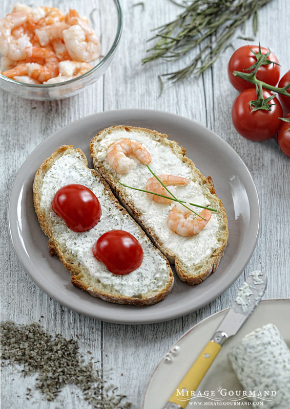
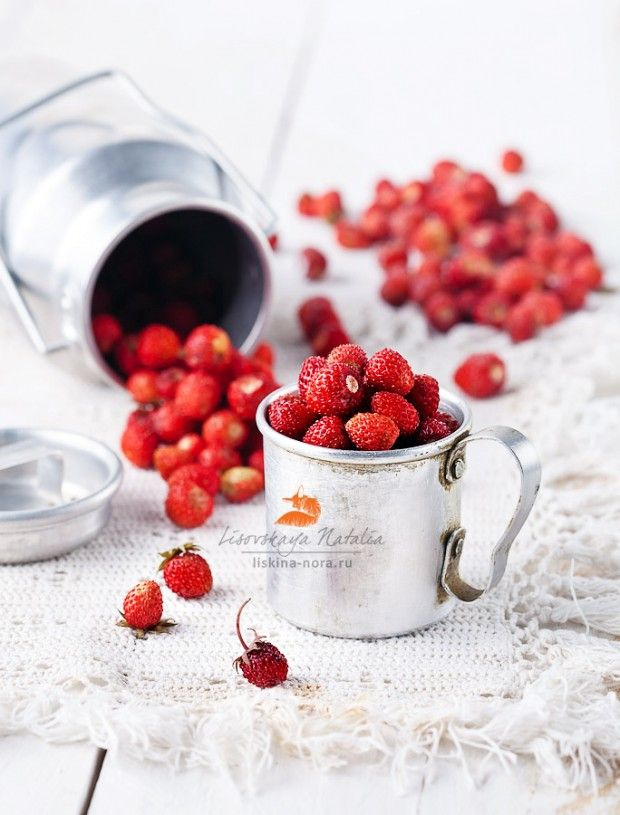
S型构图
画面上的景物呈S形曲线的构图形式，具有延长、变化的特点，使人看上去有韵律感，产生优美、雅致、协调的感觉。当需要采用曲线形式表现被摄体时，应首先想到使用S形构图。常用于河流、溪水、曲径、小路等。(这种还是适合美食）
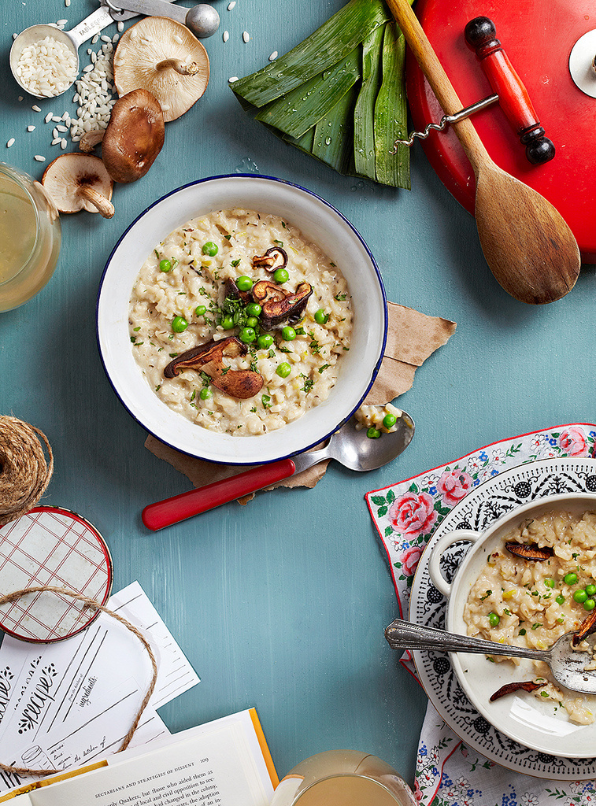
紧凑式构图
将景物主体以特写的形式加以放大，使其以局部布满画面，具有紧凑、细腻、微观等特点。常用于人物肖像、显微摄影，或者表现局部细节。对刻画人物的面部往往能达到传神的境地，令人难忘。（这个就不难理解了，我个人觉得拍些花鸟虫草会经常用到，也就是拍微观的或局部的时候用）
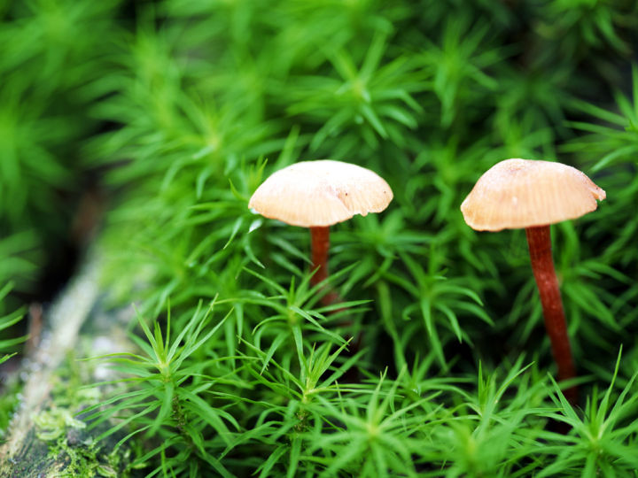
向心式构图
主体处于中心位置，而四周景物呈朝中心集中的构图形式，能将人的视线强烈引向主体中心，并起到聚集的作用。具有突出主体的鲜明特点，但有时也可产生压迫中心，局促沉重的感觉。（这个我们平常用到的相对来说就要少很多，其实就是四周向中间聚的感觉，四周变化不大，主体在中心很突出）
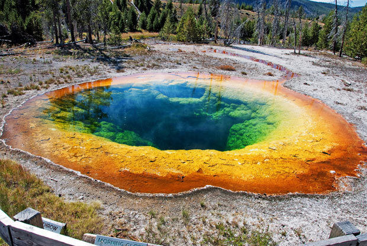
均衡式构图
给人以满足的感觉，画面结构完美无缺，安排巧妙，对应而平衡。常用于月夜、水面、夜景、新闻等题材。（这种吧就是拍那种很安静祥和的那种感觉的，你平时可以拍一些安静的水面用到）
对称式构图
具有平衡、稳定、相对的特点。缺点：呆板、缺少变化。常用于表现对称的物体、建筑、特殊风格的物体。（这个就更不难理解了对吧！）
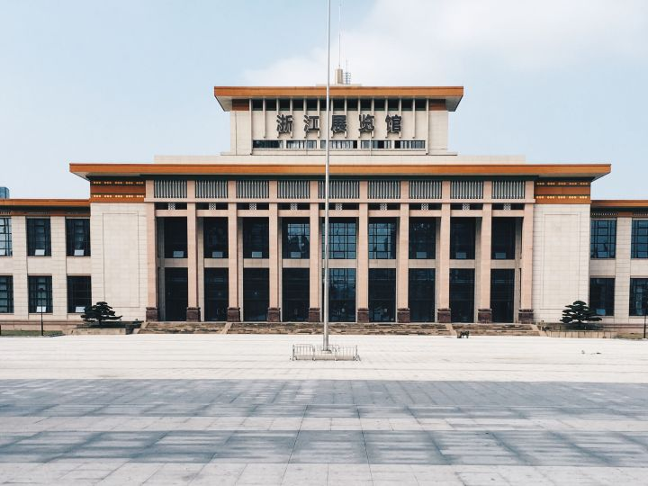
对分式构图
将画面左右或上下一分为比例2:1的两部分，形成左右呼应或上下呼应，表现的空间比较宽阔。其中画面的一部分是主体，另一半是陪体。常用于表现人物、运动、风景、建筑等题材。（这个也不难理解，就是好比画面2：1的地方有条分割线一样把画面分成两半。其实我觉得这种构图跟上面两种有时就是同时用到，你也不好说他是哪种构图，当然去纠结这个是没有意义的！）
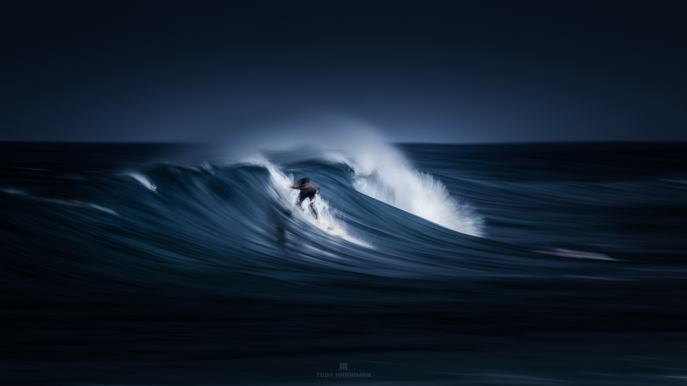
变化式构图
景物故意安排在某一角或某一边，能给人以思考和想象，并留下进一步判断的余地。富于韵味和情趣。常用于山水小景、体育运动、艺术摄影、幽默照片等。（这个听起来有点难理解，但其实也没那么难啦！例如：你拍流动的溪流，以及一些抓拍的正在运动的对象，拍小孩子是比较合适的，其实用的也挺多的）
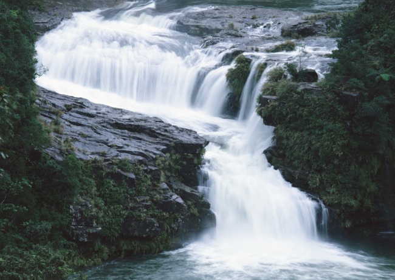
小品式构图
通过近摄等手段，并根据思想把本来不足为奇的小景物变成富有情趣、寓意深刻的幽默画面的一种构图方式。具有自由想象、不拘一格的特点。本构图没有一定的章法。（这种估计你又觉得难理解，我就举个例子吧！例如你拍窗台上的花盆和花草这种很唯美，清新优雅的感觉的时候就可以用到）
说了这么多种，相信你在看完的时候觉得这并不难啊，平时经常用到啊！对吧！所以我说其实这个只做了解就可以了，没必要在拍摄的时候去纠结选择哪种构图形式，因为这样就会束缚住你的灵感和创意！但是在你自己拍摄的时候潜意识里你应该知道你该怎么去拍？平时的话那你就得多看多想多拍，这样在你拍摄的时候就会自然而然的形成一种构图的潜意识！
当你拍摄完之后，你还得对你的作品做后期处理，后期处理的第一步而且很重要的一步就是裁剪图，这个时候就又跟你的构图有关系了。所以裁剪的时候技巧也就在于此处了！